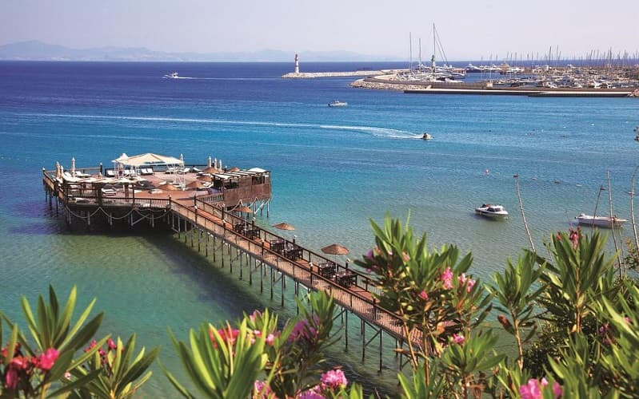

дидим
Описание курорта
Дидим — курортный район и город, расположенный в провинции Айдын, в юго-западной части Турции на Эгейском побережье. Молодой, развивающийся район. Своего аэропорта нет, ближайший в Бодруме в 82 километрах. Время в пути составляет примерно полтора часа. Также возможно добраться из Даламана — это 120 километров.
Средиземноморский мягкий климат. Но по сравнению с курортами Анталийского побережья тут низкая влажность, поэтому жара переносится легко и летом комфортно. Красивая природа.
Состоит из самого Дидима, Алтынкум (что означает «золотой песок»), Гюмюшкум («серебряный песок»). Это и есть курорт Дадим. Маленький и бюджетный по турецким меркам, но с хорошими отелями, историческими местами и изобилием ресторанов. Дидим- любимое летнее направление европейских туристов, особенно англичан. Здесь безопасно, тихо, идеально подходит для спокойного пляжного отдыха, но и активным туристам будет чем заняться. Нашим же туристам при выборе этого курорта, надо обратить внимание, что здесь мало кто владеет русским языком, и лучше приехать сюда со знанием английского. Надо отметить, что для маленького города тут много развлечений.
История
Обратимся к истории города. Согласно легенде, именно в этом месте родились Аполлон и Артемида. Слово “дидима” переводится с греческого как “близнецы”. В честь Аполлона здесь был возведен храм, в котором вещал оракул. Благодаря ему в 7 веке до нашей эры Дидим приобретает известность и славу. В работах Геродота говорится, что этому храмовому оракулу преподносили подарки не только обычные паломники, но и египетский фараон и цари Лидии. Вплоть до 4 века нашей эры упоминается деятельность оракула. Но потом город приходит в упадок из-за землетрясений. Долгое время на месте античного города была небольшая деревня Алтынкум. И только в конце 20 века начали развивать и превратили в курорт. А также переименовали в древнее название “Дидим”.
Сегодня это аутентичный, уютный, домашний городок. Дома невысокие. Надо отметить, что тут много эмигрантов, преимущественно из Европы. Часто иностранцы покупают недвижимость в качестве инвестиций или для постоянного места жительства. Его можно назвать городом для жизни: так как здесь есть вся инфраструктура, в том числе больница, университет, и безумное количество стоматологий с приятными ценами на услуги.
Как и в любом курорте Турции, здесь есть пляжи при отелях и муниципальные. Но отелей с собственной оборудованной береговой линией едва ли наберется десяток. Конечно же можно пользоваться общественным, но в высокий сезон тут невероятно много отдыхающих, в том числе и местных. Комфортнее будет на платных. К стати, многие из них удостоены “голубого флага”.
Алтынкум (Altinkum)
Туристический район, расположен на юго-западе от центра города. Песок тут золотистый, да и само название пляжа так и переводится с турецкого. Заход в море пологий, что удобно для отдыха с детьми. Невероятно красивые виды. Есть набережная с многочисленными ресторанами, кафе, магазинами. Вечером она превращается в уютное место для прогулок с красивой подсветкой. Услуги на пляже платные. Отзывы о чистоте разные.
Основная отельная база Дидима расположена в этом районе. Обратите внимание на отели, имеющие свой пляж: Aquasis De Luxe Resort & Spa, Palm Wings Beach Resort, Didim Beach Resort, Venosa Beach Resort & Spa.
Гюмюшкум (Gümüşkum)
Этот туристический район расположился в северо-западной части Дидима. Пляж тут песчаный с галькой, даже переводится название места “серебристый песок” из-за вида побережья.
Вы можете спрятаться от жары в парках, например Ататюрк, с красивым маленьким декоративный бассейном в центре и хорошей игровой площадкой для детей. Вечером можете полюбоваться закатом в прекрасно месте.
Здесь и находится аквапарк. В данное время он закрыт.
Эти пляжи очень многолюдны, особенно в выходные и праздники “яблоку негде упасть”, поэтому можно взять в прокат велосипед или машину, проехаться вдоль побережья и обязательно найдете не такие заполненные пляжи.
Отели с собственным пляжем - Anadolu Hotels Didim Resort, Long Beach Club Nature 5*, из бюджетных - Club Tarhan Serenity Hotel 4*.
Чем заняться в Дидиме?
Если вы отдыхаете в Дидиме, то обязательно посетите Храм Аполлона. Здесь оживает история. По легенде именно на месте храма красавица Лето родила близнецов богу Зевсу. Именно здесь вещал известный оракул, чьи пророчества приходили слушать паломники со всего греческого мира. Строили его 600 лет, но так и не закончили строительство. Его начали воздвигать дважды: в первый раз — в 8 веке до нашей эры. Крыши так и не было, скорее всего не смогли придумать, как перекрыть такое масштабное сооружение. Также планировалось поставить 122 колонны, но успели только 80. Храм был разрушен персами. Строительство нынешнего, частично сохранившегося храма, началось в 4 веке до нашей эры по приказу Александра Македонского. По преданию храмовый оракул предсказал победу в войне с персами. С приходом христианства строительство прекратилось.
Сегодня даже в разрушенном состоянии храм Аполлона производит сильное впечатление. Хотя и сохранились всего 3 колонны, остатки древнего фонтана, жертвенного алтаря, квадры с изображением Медузы Горгоны. Поражает масштаб строения, невероятная точность подгонки мраморных блоков.
Расположен в центре города, добраться можно как на общественном транспорте, так и на такси. Вход всего 30 лир.
Милет
Недалеко от Дидима есть руины греческого города Милет. Подробнее читайте в нашей статье "Город Милет".
Озеро Бафа
Северо-восточнее Дидима расположилось живописное озеро. Когда-то было частью моря. Площадь составляет 65 кв.м.
Можно посетить как в рамках групповой экскурсии, так и самим. Вокруг озеро есть исторические памятники, а также интересные деревеньки. Например, близ полузаброшенной деревни Серчин есть экологический парк,где стоят рыбацкие лодки, а также можно понаблюдать за дикой природой. Много пчелоедов, аистов и других. У места Милос есть возможность понаблюдать за бесчисленными фламинго в озере. Здесь обитают более 100 видов птиц.
И для любителей руин есть, что посмотреть. Рядом с поселением под названием Гёляка находятся Семь монастырей, памятник византийской эпохи. Располагаются руины в горах, добираться придется пешком с подъемом около 2 километров.
На самом берегу озера находится деревня Капыкыры на месте древней Ираклии. Сохранились древняя городская стена, развалины разных периодов, а также крепость Римского периода на небольшом островке.
Озеро Бафа — это место, где вы можете обрести мир, услышав звуки животных, тихие и спокойные, вдали от цивилизации.
Удачного отдыха в Бодруме, еще больше интересного в Турции (список статей ниже).
Статьи о Турции

Кратко об истории Турции

Климат и погода в Турции по месяцам
Хотите в Турцию?
Get in touch and let our team help you put things together and plan your move.